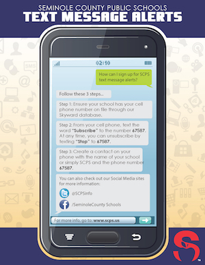

School Assembly
Was built in Jan. 2, 1966
The mission of the Seminole County Public Schools is to ensure that all students acquire the knowledge, skills, and attitudes to be productive citizens.
Achievments
WILSON ELEMENTARY SCHOOL RECEIVES COVETED NATIONAL BLUE-RIBBON SCHOOLS AWARD

September 23, 2020 – U.S. Secretary of Education Betsy DeVos today recognized 367 schools as National Blue Ribbon Schools for 2020. The recognition is based on a school’s overall academic performance or progress in closing achievement gaps among student subgroups. “Congratulations to this year’s National Blue Ribbon School awardees,” said Secretary DeVos. “It’s a privilege to recognize the extraordinary work you do to meet students’ needs and prepare them for successful careers and meaningful lives.”
whats new
-
Text Message Alerts
Seminole County Public Schools (SCPS) is dedicated to providing important, up-to-date information to parents/guardians regarding their child. We encourage you to sign up for our text message alert system to quickly receive information about SCPS and your child's school. Stay connected and stay informed!